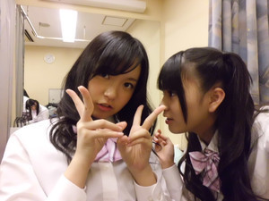
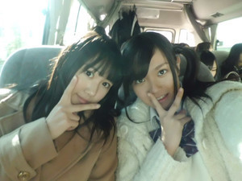
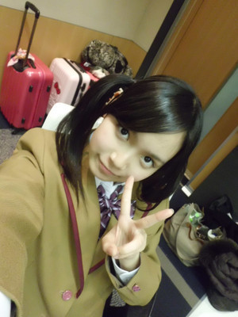

返回列表-BACK TO INDEX
にょんにょんにょーん。ひめにょんです♪
明日はいよいよセンター試験ですね。
受験生のみなさんふぁいとですー(`・・)/
いい結果だったら、こっそりひめたんに教えてね♪
さくら咲けーい!!!
ゆーわけでこの日記見たら寝ましょうね♪徹夜は止めた方が。うん。
 ボーリングに行ってきたよ。久々にやったからスコアがorz
ボーリングに行ってきたよ。久々にやったからスコアがorz
ひめたんってどれ位のスコアでるのかな？
そいえばここ1年くらいボーリングいってない(>_<)
今度ボーリングしたら報告しますー
...いつになったら行けるっかなー♪
RADWIMPS聴いてくれたかな？
ごめんなさいー!
みなさんに色々オススメしてもっらた曲を
広島に帰ったら探してみようとおもっとるんぢゃけど
まだBUMP OF CHICKENのアルバム１枚しかきけてない(>_<)
クリスマス前から1日しか広島にいられなくて...。
もう少し待っててください!!!
BUMP OF CHICKENの曲は聴いてくれたかな？
もし聴いたら好きな唄教えて！！！
とりあえずアルバム1枚制覇してみましたよー
やっぱやっぱ鉄板ぢゃけど「天体観測」はいいうたですね(//ω//)♪
ほかにもいいうたあったら教えてくださーい!
コメ返してもらえると飛び跳ねて喜んでます(゜▽゜*)
ほんまにー？一緒ぢゃーあ!!!
ひめたんもコメントもらえると飛び跳ねて喜んでます(゜▽゜*)
乃木メンの意外な性格や姫様が他のメンバーに言われた
意外なことを教えて！！！
乃木メンの意外な性格...。
みんな意外すぎて言えない
とかゆーて(//ω//)わら
言いだしたらとまらなくなるから言わないってことにしておきましょー？
みんなの日記見よったら、ちょいちょい本性が。うん。
ひめたんはお母さんの料理で何が一番好きですかー？？
んーいちばんと言われたら難しいけどー、
ハンバーグとか。
アップルパイとか。
チーズグラタンとか。
欧米かーなんて言わせない(o>ω<o)!
ひめたんはこしあん派？つぶあん派？
こしあんorつぶあんって聞かれたらつぶあん派かなー。
あんこよりクリームとかチョコの方が好きですひめたん(*^^*)
部活はやってる？
元放送部部長(ω)ゝきらーん
中３は夏で引退しましたとさ。
ひめたんの性格を簡単に表すと？
甘いと見せかけてちょっぴり辛い(笑)
いわゆる甘辛ミックス♪♪
Byあみあみ(能條愛未chan）
ひめかはしっかり者です^^♪アイドルにすごく適した人です
Byろってぃー（川村真洋chan）
妹ーとか言って
ななよりしっかりしてる。
朝起こしてくれる
ななのモノマネしてくるけどな、似てない！
そこが可愛いひめたん
Byななせまる（西野七瀬chan）
だそうです(^^)/
最近ひめたんらしくないってどういうことかな？
ブログは十分にひめたんテイストいっぱいだよ！
いやーんありがとうございます♪♪
とりあえず高校受かった！って報告をしに行く（笑）
言うよねー♪
て、ひめたんも高校受験ぢゃ!!
お互い頑張ろうおー!
ひめたんひなぴょん（川後陽菜chan）

ひめたん
2012/01/14 01:10｜
ん～～～～～～ななせまる!!!!!
ひめたん最近何かとななせまる(西野七瀬chan)に絡む(//ω//)きゃは
ひめたん頑張ってななせまるの物まねしよるんぢゃけど
みんないわくちょっと違うらしいんよねー。
ぢゃけななせまるによく「ななせまるの物まねをするひめたんの物まね」をされる...
ん(。・ω・。)？
きのうのひめたんブログ読んでなーいって人は→こっちこっち ひめたん(*ゝω･*)ﾉその55
今回、年末に帰らなかったのは、今回の事が影響しているのでしょうか？
帰らずにレッスン続けて見てどうですか？
ぴんぽーん(ω)!
いつもレッスン出れないから、長い休みくらいは毎日出席するしかー!みたいな。
普段ひめたんがおうちで練習しとる間にみんなは先生からアドバイスもらっとるって考えたら
ぐーっと差ぁつけられとる気がしてうずうずしとったんよー。
ぢゃけ充実した冬休みになりましたとさ(*^^*)
お姉さんの友達に応援されるって変な感じするかな？
ひめかちゃんがイイなら応援させて！←
全然うぇるかむ♪
嬉しいです高山ですー(o>ω<o)
きゃは
温泉は好き？長風呂派？何回も派？
何回も派ー♪
「２時間は粘ろう!」っていっつも思うんぢゃけど
結局あっさり諦める(ω)わら
地元パワー注入して、元気になったのかな？
それともファンの暖かい言葉でのりきったのかな？？？
んーどっちも(o>ω<o)/
地元に帰ってひめきゅんさんたちからのコメント読む。
最強のタッグですねこれ!
前の記事でコメント遅くなっちゃってごめんなさい。
ひめたん、遅くなったコメントって読んでる？
多分読んでないだろうなぁ!?
読んでますよぉ∩^ω^∩
何回も読む。読んで読んで読み直すんですもんー♪
だから遅刻してもコメント書いてってくださいよー。
ひめたんって球技とか興味ある？
テニスとか…（硬式）
テニス する人かっこいいと思うガチで(*/ω＼*)
する人かっこいいと思うガチで(*/ω＼*)
あっ野球もサッカーももちろんかっこいい
結局何かに一生懸命な人はかっこいいんですよ
乃木坂制服カーディガン、ブレザー、色分けはどうやって決めてるの
スタッフさん(^^)
一人ひとりのイメージに合わせて決めるそうです。
ウチらも乃木坂ふぁみりーに入ってるの？？？
当然っ!
乃木坂46が大好きだーって人はみんな乃木坂ふぁみりー
あなたもわたしも乃木坂ふぁみりー∩^ω^∩♪
地元パワーってひめたんのクラスには
どんな人がいてはるん(^^)？
ひめたんのクラスは学年1やんちゃで元気でお説教の常連さん。
38人全員空気が読めるみたいです。
みーんな優しくて、個性的で、面白いんだこれが!!!
あーそう。それでね今日はね。
明治の記者会見がありましたとさ。
ゆーわけで近々明治ＣＭバージョンの制服解禁するかもしれないかもー♪
とりあえず今日のひめたんは自撮りしとったら、1っ収穫があった。
カメラ設定で「人物」モードがあるにもかかわらず...
「夜景」モードがいい感じになる!!!!!
...はず。
ん(。・ω・。)？
ひめたん
2012/01/13 00:24｜
ふたたび東京に上陸しましたひめたんです(`・・)ゞ
ゆっきーな(柏幸奈chan)に
ひめたんを見てるとお菓子買ってあげたくなるー
ひめたんを見てるとおもちゃ買ってあげたくなるー
ひめたんを見てると風船あげたくなるー
って言われちゃった(ω)きゃは
いやー最近ＤＤかなりん(中田花菜chan)が
ひめきゅんらしいの(*^^*)
かずみん(高山一実chan)もかなりんも大好き
ひめきゅんの人に悪い人はおらんっ!!!
そうですよねみなさん？
てかてかよく考えてみたら乃木坂の出席番号...
高山→中田→中元
(ω)
ちなみに、中元→永島→西野→能條の流れを続けて呼んでみると
なかもとながしまにしのーじょう!
うわーい繋がったー＼(^^)／
乃木メンとのこーんな何気ない会話が好きです。
ひめたんは牡蠣(かき)の土手鍋って知ってる？
当然!広島の名産品じゃないですかー♪
好きすきっ(*/ω＼*)
今の時期に広島行ったら絶対おすすめぢゃーあ。
ひめたんはアニメはなにが好きかな？
そしてそのアニメのストーリーではどこ辺りの話が好きかなーん？(^^♪
ちっちゃいときはアニメよくみとったけど、最近全然見とらん('・・`)ｹﾄﾞ
けいおんの曲は割とうたえるんですよー♪
オススメのアニメとかってありますか？
オススメな漫画ってありますか？
漫画も最近あんまり読んでない('・・`)
少女漫画にハマりたい時期があったりもした!
ひめたんの周りはワンピースふぁん多いっけなー。
何かオススメな漫画ありますか？
てか野球は二回でてたけどバスケはどうなん？
HPの見たら結構できてるように見えたけど。
ひめたん２年間だけバスケ同好会に入っとったんよー。
ぢゃけシュートする時のフォームはよく褒めてもらえる(*^^*)/
実際シュート率はだめだめだけれども。
握手会に広島の名産品持って行っていいかな？
これぞっていうお土産があったら教えてね!!
ほええー。広島人だと逆に広島土産食べんけ嬉しいっ
何がいいかねー？ひめたん的には「あげもみじ」オススメなんぢゃけど
シワシワになっちゃうおそらく('・ω・`)ちーん
ファンという名のお兄ちゃん？も乃木坂ふぁみりーに入れて～
うぇるかんむ(o>ω<o)♪
ひめたんは、コメントできるのにサボっているファンに
何か言いたいことありますか？（笑）
いやーん寂しーい!!!
コメントサボったらひめたん悲しいじゃないですかー。
ひめたんブログサボってもいいのー(>_<)？
...とかゆって。わら
にゃは(ω)★ってなんやねんww
ごまかしかな？
にゃは(ω)★←わら
みなさんも困ったことがおこったら、とりあえずにゃはりましょう。
にゃはー♪
いまさらだけど、ひめたんを推していってもいい?
喜んでー(*/ω＼*)!!!

らりん（永島聖羅chan）ひめたん
ひめたん
2012/01/12 01:05｜
ひめたん復活ーっ(`・ω・')ゞ!
たくさんのあったかいコメントありがとうございました
更新するのにいっぱい時間かかっちゃったけど
やっぱりひめたんはブログが好きだあ。
ひめきゅんのみなさんとお話しするのが好きだあ。
負けず嫌いなひめたんは
弱音を吐くのはあんまり好きじゃないんぢゃけど
昨日1日ひめたんは心から、みなさんに甘えさせてもらいました。
本当にありがとうございました
乃木坂ふぁみりーの絆は本物ですね∩^ω^∩
あーもう最近ひめたんはひめたんらしくないっ
ゆーわけで昨日久々に広島帰ってまいりました(`・・)/
「ゆーわけで」の使い方おかしいカナ？
∩^ω^∩♪
よし。ひめたんはおうちで寝たし学校行ったし
地元ぱわー注入っ(*ゝω・*)Ｖ
というわけで、ひめたんは明日からまたしばらく東京へ行ってきます!
頑張る。ひめたん頑張るからね。
久々のコメント返しきてあーああぁ。
成人式なんだ(o^∀^o)ひめたんお祝いの言葉が欲しいなあ↑↑
遅くなっちゃってごめんなさい('・・`)
昨日は成人の日だったんよね。新成人の方おめでとうございます♪
うらやましいー。ひめたんも早く成人式参加したいー
人生のセンパイ!これからの日本を引っ張って行ってくださいな(^^)
こんな長文読むの「たいぎー」よね？（笑）←使い方あってる？（笑）
使い方はあっとるけど、ひめたんはそんなこと思っとらんよ(ω)
ひめきゅんさんほんまにありがとうございました!!!
じゃあひめたんは夢叶う矢にお願いするとしたら何をお願いする？？
お願いしたいことはいっぱいあるけどー...
いちばんに何を叶えてもらおっかな。
もっともっと飛躍したい。ぴょーん(ω)♪
写真に写ってる合格御守はひめたんの高校受験用かな？
ぴんぽーん(∀)!
ひめたんにはお守りとひめきゅんのみなさんがついてるから大丈夫♪
ひめたんって朝は強い方、弱い方？
小学1年生～5年生までラジオ体操は皆勤賞、
8年間9ヶ月の学生生活は無遅刻、
今まで寝坊なんて無縁だったんですひめたん
...最近、お仕事するようになってから起きれんくなったけど('・・`)ちーん
忘れない限り毎日コメしてるんだよ！知ってた？
知らんて言ったら泣くぞY(>_<、)Y
知っとる!ひめたん知っとるよーお
だってコメ返めっちゃチェックしよるもん!
ぢゃけ泣かんでー(>_<)
ブログの更新って、一日あたりの上限あるの？
乃木坂はふりーだむ♪
1日何回更新しても、何日に1回更新しても自由って制度ですー
運営委員がひそかにカウントしてるって噂ぢゃけどね(//ω//)きゃは

ひめたん
2012/01/11 01:08｜
昨日はブログ更新しなくてごめんなさい。
番組を見てから今の素直な気持ちをブログに書こうと決めていたのですが
伝えたい気持ちはいっぱいあるのに言葉が上手くまとまらなくて
結局まる1日かかってしまいました
改めて自分の口から報告します
私は、今回は選抜に選ばれませんでした。
2/22発売のファーストシングルは表題曲に参加することができません。
CDジャケットにも、表題の音源の中にもいられないんだなーと思うと
悔しくて涙が止まりませんでした。
いつも応援してくださるみなさん
みなさんの期待に答えることができなくてごめんなさい。
パワーをいただいてばかりで何もお返しできなくてごめんなさい。
せっかくのデビューシングルなのに嬉しい報告ができなくてごめんなさい。
みなさんの声援に答えることができなくて、本当にごめんなさい。
今回の選抜メンバー発表は、当然の結果だと思ってます。
選抜に入った子たち、見えないところでたくさん努力していた
だからすごくキラキラしてて、心から「おめでとう」って思えます。
それに比べて自分は、歌やダンスは経験者だからってどこか自惚れてて
本当は毎日レッスンに出れない分、
みんなよりだいぶ遅れてるんだってことを自覚して
誰よりも頑張らないといけなかったのに。
受験や地方組を言い訳にして甘えていました。
乃木坂がスタートしてから決めていた自分の中での課題は
まだ何一つクリア出来ていません。
もっと頑張っておけばよかった、もっと努力できたんじゃないかって。
今になって後悔しています。
もうこんなふうに悔しい思いなしたくない
過去を振り返ってくよくよする自分とはさよならします
あの収録の数日後、アンダーのみんなとスタッフさんとで食事会をしました
同じ時間、選抜組は撮影をしてるのに自分たちはのんきに食事会って思うと
なんだか情けない気持ちで出かけていったけど、
「ＴＥＰＰＥＮを目指そう!の会(仮)」で
東京タワーの展望台から東京の街を一望して
いつものスタジオ、乃木坂スクエア、ZEPP東京、...
自分みたいな、無力で、何もできない中学生が
たくさんの方の力を借りてすんごい場所に立っていたんだなって改めて感じました。
地上にいると気づかない、展望台に登ってみてはじめて気づくことがありました
例えば東京の広さ、それに対比してみてわかる自分のリアルなちっぽけさ。
自分は完全に埋もれてる
まずは自分で自分のこと磨かないと変われない
今のままじゃ車のライトに負けちゃう
キラキラしてて、なおかつ誰かに感動を与えられるような
東京タワーのふもとのイルミネーションみたいな人にならなきゃ。
アイドルのてっぺん。
てっぺんから人の数を数える姿を想像すると、気が遠くなります
ライバルはたくさんいる。
東京タワーから地上全体を見渡したときに
あっと目を引くような人にならないと勝てない。
スタッフさんは選抜の子たちはもちろんだけど
アンダーの私たちまでちゃんと見てくれている
悔しかったら自分の力ではい上がってこいって突き放すのが普通なのに
アンダーのおまえらが頑張らなきゃ乃木坂46が成長しないって
数少ないおやすみの日なのに
わたしたちのために素敵な会を開いてくれ
乃木坂46のために、涙を流して、徹夜で会議開いて、
今後の乃木坂46のことを熱く語っている。
そんなスタッフさんにもはやく恩返ししなきゃって思いました。
選抜発表の日
アイドル界の厳しさを痛感しました
全員一緒に頑張ってきて
全員一緒に課題を乗り越えてきて
ある日いきなり優劣をつけられる
それも「着信の有無」という方法で...
怖い。怖い怖い怖い。
自分はこんなにも恐ろしい世界に飛び込んだって痛感しました。
でも逃げようとは思いません
自分で決めた道だから。
乃木坂46のオーディションは
優柔不断で自分のことが見えなくて
自分は何がしたいかわからなくて悩んで迷って
結局何でも中途半端にこなしてきた自分が
はじめて自分の意志で行動して飛び込んだ世界だから。
アンダーだって現実はかわらないけど
やっぱり乃木坂46のみんなが大好きだから
これからも乃木坂46の一員として飛躍していきたいから
しばらくはアンダーとしてみんなを支えさせてください。
デビューシングルの表題曲を練習するメンバーたちの姿を
ただ座ってみていることしかできない。
それが今の自分です。
でも、セカンドシングルの表題曲は前列で自信満々に歌って踊りたい。
だから、がむしゃらに頑張ってみます
自分を追い込んで追い込んで、
上り坂の頂点めざしてがむしゃらにはい上がってみせます
改めてこんな強い気持ちになれたから自分は幸せです。
決して無駄な選抜発表ではなかったと今になって思います
12月に選抜の発表があってからずっとへこんでいました。
自分って何なんだろう、何でここにいるんだろうって思って
どこにいっても自分の居場所が見つからない気がして。
だから日記を書いていると、自分と向き合えるんです
ブログで日記を書いてコメントが返ってくると嬉しくて。
なかなかイベントに登場できない自分は唯一、ブログを通して
みなさんとつながってる。
そんな絆を確かめられるブログ更新が 私は大好きです
これからも自分らしく更新頑張っていきます
だからこれからもブログ遊びにきてください。
いっぱいお話聞いてほしいし、聞かせてください。
そして、今度の選抜発表までの時間
改めて自分と向き合ってみるから
もう一度、ひめたんにチャンスをください
いつも努力と感謝を忘れないひめたんでいるので
これからも 信じて応援してください
半年前、
アイドルを目指して頑張ったけど
惜しくもメンバーオーディションに落ちてしまった38900人の
はかない気持ちを無駄にはしない
乃木坂合格が決まって地元のスクールを飛び出してきた身勝手な自分を
笑顔で送り出してくれた広島の仲間やファンのみなさんの
優しさと、卒業証書のぬくもりを忘れない
そして
AKBのライバルと名乗って突如現れた33人の普通の女の子に
精一杯愛情を注いで育ててくださった
乃木坂ふぁみりーのみなさんの顔を
私は、忘れない。
これが、1日かけて整理した
みなさんに伝えたい今の私の気持ちです
日芽香
2012/01/10 00:29｜
返回列表-BACK TO INDEX
{kind=link}
{kind=link}
{kind=link}
{kind=link}
{kind=link}